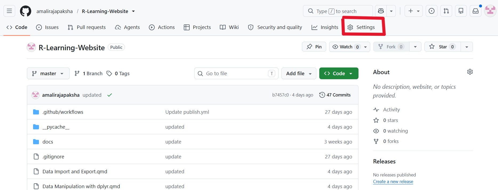
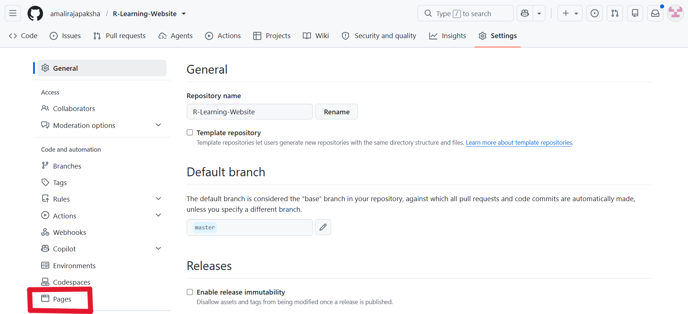
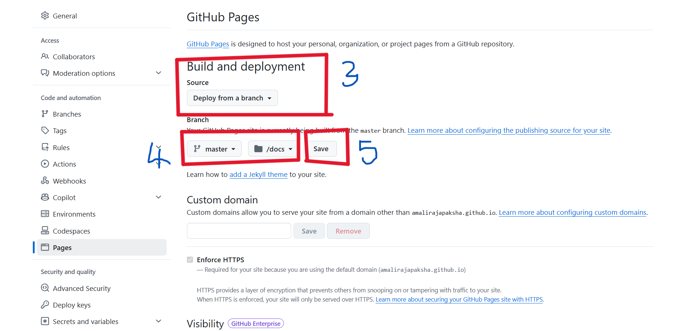
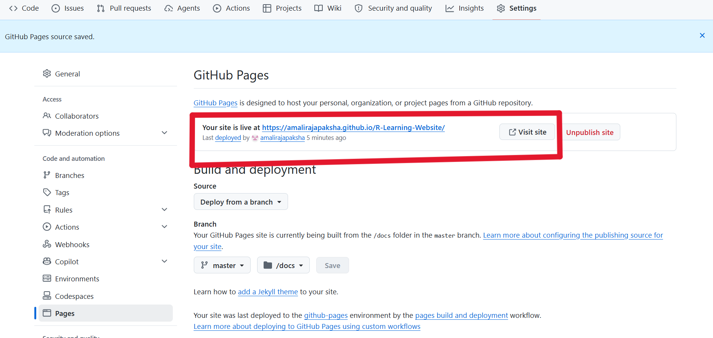

Building Your First Website with Quarto: A Step-by-Step Guide
In this blog post, we explore the complete workflow of building a structured website using Quarto, based on a real project: the R Learning Website.
Overview of the Workflow
Building a Quarto website involves four main steps:
Creating a Quarto project
Structuring content into
.qmdfilesConfiguring the website using
_quarto.ymlRendering and publishing the website
We will explain each step using the R Learning Website as an example.
Step 1: Creating the Quarto Website Project
The project is initialized using RStudio:
File → New Project → New Directory → Quarto Website
This automatically generates the basic structure:
R-Learning-Website/
│── index.qmd
│── about.qmd
│── _quarto.yml
│── styles.cssIn your case, additional learning modules can be added as individual .qmd files:
Introduction to R and RStudio.qmd
Data Types and Data Structures.qmd
Data Import and Export.qmd
Reshaping Data with tidyr.qmd
Data Manipulation with dplyr.qmd
Data Visualization with ggplot2.qmd
Statistical Modeling in R.qmd
Reproduciable Reporting with Quarto.qmd
...Step 2: Adding Content Pages
The homepage (index.qmd) introduces the website:
---
title: "R Learning Website"
---
## Welcome 👋
This website is a structured learning resource for **R programming and statistics**.
It includes step-by-step modules covering: - Data manipulation - Visualization - Statistical modeling - Reproducible reporting using Quarto
::: {.callout-note}
## Note
This website is **an illustrative example** used to demonstrate the process of building a Quarto website. It is intended for learning purposes only. You can customize its structure, content, layout, and design to suit your own project or personal website.
:::The about.qmd file typically contains author or project details.
Step 3: Organizing Content into Modules
Each .qmd file represents a learning unit in your website.
For example, a module like Introduction to R and RStudio.qmd contains:
---
title: "Introduction to R and RStudio"
---
## Introduction
R is a powerful programming language designed for statistical computing, data analysis, and data visualization. RStudio is an integrated development environment (IDE) that provides a user-friendly interface for writing, running, and managing R code.
## Topics Covered
- What is R?
- What is RStudio?
- Installing R and RStudio
- Understanding the RStudio interface
- Running your first R commands
## Example
```r
# Assign values to variables
x <- 10
y <- 20
# Perform a simple calculation
sum <- x + y
# Display the result
print(sum)
```Step 4: Configuring the Website (_quarto.yml)
The _quarto.yml file controls navigation and layout.
In your R Learning Website, the structure is defined like this:
project:
type: website
output-dir: docs
website:
title: "R Learning Website"
navbar:
left:
- href: index.qmd
text: Home
- href: about.qmd
text: About
- text: Learning Modules
menu:
- href: "Intrduction to R and RStudio.qmd"
text: Introduction to R and RStudio
- href: "Data Types and Data Structures.qmd"
text: Data Types and Data Structures
- href: "Data Import and Export.qmd"
text: Data Import and Export
- href: "Reshaping Data with tidyr.qmd"
text: Reshaping Data with tidyr
- href: "Data Manipulation with dplyr.qmd"
text: Data Manipulation with dplyr
- href: "Data Visualization with ggplot2.qmd"
text: Data Visualization with ggplot2
- href: "Statistical Modeling in R.qmd"
text: Statistical Modeling in R
- href: "Reproducible Reporting with Quarto.qmd"
text: Reproducible Reporting with Quarto
format:
html:
theme: cosmo
css: styles.css
toc: true
Here,
project:defines the project type and specifies that the rendered website should be placed in thedocsdirectory.
website:contains the website title and navigation bar.
navbar:creates the menu that links to each learning module.
format:controls the appearance of the website, including the theme, custom CSS, and table of contents.
In this example, the website output is directed to the docs folder using output-dir: docs. This is recommended because it simplifies deployment with GitHub Pages, allowing the rendered website to be published directly from the docs directory.
Important: YAML is indentation-sensitive, meaning that the hierarchy of the configuration is determined by spaces rather than braces or parentheses. Therefore, it is essential to maintain consistent indentation throughout the _ quarto.yml file. Incorrect indentation may result in configuration errors or prevent the website from rendering successfully.
Step 5: Previewing the Website
While developing, you can preview the website using:
quarto previewThis opens a live local server where changes are updated automatically.
Step 6: Rendering the Website
To generate the final static website:
quarto renderThis creates the output in the docs/ folder:
docs/
│── index.html
│── about.html
│── Introduction to R and RStudio.html
│── ...Step 7: Publishing the Website with GitHub Pages
Quarto provides several options for publishing websites, including Posit Connect Cloud, GitHub Pages, Posit Connect, Quarto Pub, and Netlify. In this tutorial, we will use GitHub Pages because it is free, beginner-friendly, and integrates seamlessly with GitHub repositories.
Prerequisite
Before publishing your website, make sure your Quarto project is stored in a GitHub repository. This allows GitHub Pages to access your project and publish your website.
A typical workflow is:
Create Quarto Website
↓
Initialize Git Repository
↓
Push Project to GitHub
↓
Render Website
↓
Enable GitHub PagesOnce your project is available on GitHub, you are ready to publish the website.
Enable GitHub Pages
Quarto provides both terminal-based commands and the GitHub web interface for deploying websites. While the terminal approach is useful for experienced users and automated workflows, the GitHub web interface is more intuitive for beginners. Therefore, in this tutorial, we will use the GitHub interface to deploy the website.
Open your GitHub repository and follow these steps:
Navigate to Settings.

Select Pages from the left sidebar.

Under Build and deployment, choose:
- Source: Deploy from a branch
Then select:
Branch:
masterFolder:
/docs
Click Save.

GitHub will automatically begin publishing your website. After a few moments, the website URL will appear at the top of the Pages settings page.

Note: We select the /docs folder because our Quarto project is configured with output-dir: docs in _quarto.yml. This ensures that GitHub Pages publishes the rendered HTML files generated by Quarto.